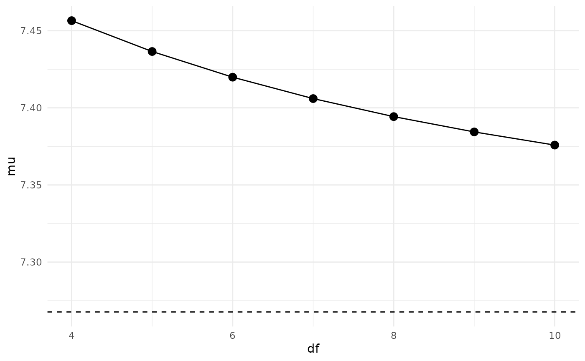

Plot Posterior Quantities of Interest Under Alternative Model Specifications
Source:R/use_weights.R
spec_plot.RdUses weights computed in adjust_weights to plot posterior
quantities of interest versus specification parameters
Arguments
- x
An
adjustr_weightedobject.- by
The x-axis variable, which is usually one of the specification parameters. Can be set to
1if there is only one specification. Automatically quoted and evaluated in the context ofx.- post
The posterior quantity of interest, to be computed for each resampled draw of each specification. Should evaluate to a single number for each draw. Automatically quoted and evaluated in the context of
x.- only_mean
Whether to only plot the posterior mean. May be more stable.
- ci_level
The inner credible interval to plot. Central 100*ci_level posterior draws.
- outer_level
The outer credible interval to plot.
- ...
Ignored.
Value
A ggplot object which can be further
customized with the ggplot2 package.
Examples
spec = make_spec(eta ~ student_t(df, 0, 1), df=4:10)
adjusted = adjust_weights(spec, eightschools_m, keep_bad=TRUE)
spec_plot(adjusted, df, mu, only_mean=TRUE)
